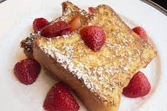

French Toast

Description
The BEST French Toast recipe on the planet! Fluffy and tender on the inside,
and gloriously brown on the outside with a little crisp. Learn how to make amazing French Toast, from what bread to use, the perfect batter, and how to cook. Start your morning right!
Is there nothing better than French Toast for Sunday breakfast?
Thick slices of break, soaked in a mixture of beaten eggs with milk and cinnamon, toasted in a frying pan,
and served with butter and maple syrup. One of the most popular breakfast dishes for a reason.
Ingredients
- 4 large eggs
- 2/3 cup milk
- 1 teaspoon cinnamon
- 8 thick slices of bread (the thicker the better)
- Butter, vegetable oil, or olive oil
Somewhat optional:
- Maply syrup
- Powedered sugar
- 2 teaspoons of freshly grated orange zest
- Fresh berries or any other fruit you prefer
Steps:
Make the egg mixture:
In a medium bowl, whisk together the eggs, milk, and cinnamon. Stir in the orange zest and/or triple sec if using. Whisk the mixture until well blended and pour into a shallow bowl, wide enough to place a slice of the bread you will be using.Soak bread slices in egg mixture:
Place each slice of bread into the milk egg mixture, allowing the bread to soak in some of it.Fry the french toast:
Melt some butter in a large skillet over medium high heat. Shake off the excess egg mixture from the bread and place the bread slices onto the hot skillet. Fry the French toast until browned on one side, then flip and brown the other side.Serve:
Serve the French toast hot with butter, maple syrup, and/or fresh berries.